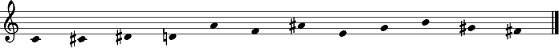

This example defines an all-interval series — a CSP classics. The all-interval series concept stems from serial music. A series (or tone row) is a sequence of twelve tone names (pitch classes) of the chromatic scale, in which each pitch class occurs exactly once. In an all-interval series, also all eleven intervals between the twelve pitches are pairwise distinct (i.e. each interval occurs only once). These intervals are computed in such a way that they are inversional equivalent: complementary intervals such a fifth upwards and a fourth downwards count as the same interval (namely 7). Shown is one of the 3856 solutions known from the literature.
 click the score for sound (mp3)
The actual CSP definition is brief. AllIntervalSeries returns the all-interval series Xs, which is a list of pitch classes represented by finite domain (FD) integers. For convenience, also the list of intervals between the series pitches can be output (Dxs, also a list of FD integers). AllIntervalSeries expects the length of the series to generate as argument L (an integer).
proc {AllIntervalSeries L ?Dxs ?Xs} Xs = {FD.list L 0#L-1} % Xs is list of L FD integers in {0, ..., L-1} Dxs = {FD.list L-1 1#L-1} %% Loop constrains intervals: inversionalEquivalentInterval(X_i, X_i+1, Dx_i) for I in 1..L-1 do X1 = {Nth Xs I} X2 = {Nth Xs I+1} Dx = {Nth Dxs I} in {InversionalEquivalentInterval X1 X2 Dx} end {FD.distinctD Xs} % no PC repetition {FD.distinctD Dxs} % no interval repetition %% add knowledge from the literature: first series note is 0 and last is L/2 Xs.1 = 0 {List.last Xs} = L div 2 %% Search strategy: first fail distribution {FD.distribute ff Xs} end
The CSP first creates two lists of FD integers and unifies them with Xs and Dxs. Then, it constrains the relation between series pitch classes and their intervals with the constraint InversionalEquivalentInterval (see below). The elements in Xs and Dxs are constrained to be pairwise distinct. We know from the literature that the first pitch class of an all-interval series is always 0 and that the last pitch class is the integer L/2. Finally, the CSP states a distribution strategy.
The CSP makes use of the user-defined constraint InversionalEquivalentInterval. InversionalEquivalentInterval constrains Interval to be an inversional equivalent interval between the two pitch classes Pitch1 and Pitch2.
proc {InversionalEquivalentInterval Pitch1 Pitch2 Interval} Aux = {FD.decl} % create an auxiliary variable in %% adding 12 has no effect for mod 12, but the FD int Aux must be positive Aux =: Pitch2-Pitch1+12 {FD.modI Aux 12 Interval} end
Because of its simplicity, this CSP does not require any Strasheela constructs. Strasheela was only used to output solutions, for example, into music notation. For more complex musical CSPs, however, Strasheela considerably helps to express score information, simplifies the score information access (e.g. in order to apply constraints to variables), and provides special score search strategies. The full source of this example is extensively documented. In addition to explaining the actual CSP itself, the source also discusses how Strasheela modules are loaded into Oz, how constraint solvers are called, how solutions are output into various output formats, and so forth.